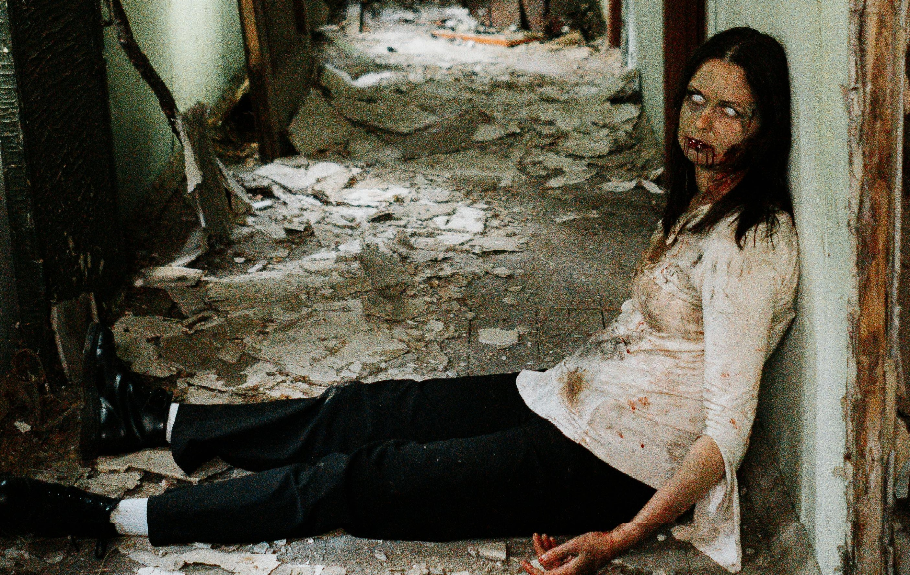

The Dead
Death is an inevitable part of the human experience, a profound reality that touches everyones life at some point. It represents the end of ones physical existence, but its implications often extend far beyond the mere cessation of biological functions. For many, death is a source of profound grief and loss, as it signifies the permanent absence of a loved one. Different cultures and religions interpret death in various ways, with beliefs ranging from reincarnation to an afterlife. In literature and philosophy, death is frequently explored as a fundamental aspect of the human condition, prompting reflections on the meaning and purpose of life. Some view death with fear and anxiety, while others approach it with acceptance and peace. It is a topic that evokes deep emotions and existential questions, challenging individuals to confront their own mortality. Despite its finality, the legacy of a persons life often continues through the memories and impact they leave behind. Ultimately, death is both a personal and universal experience, shaping how we live and relate to each other. Understanding and accepting death can lead to a richer appreciation of life itself, fostering a greater sense of empathy and connection.
Zombies are fictional undead creatures popularized by horror films and literature. Typically depicted as reanimated corpses, they are often portrayed as mindless and driven by a hunger for human flesh. The concept of zombies has roots in Haitian Vodou folklore, where they were believed to be individuals revived by sorcery. In modern media, zombies are commonly associated with apocalyptic scenarios, where they threaten human survival. Their enduring appeal lies in their embodiment of fear and the unknown, making them a versatile symbol in horror genres. Despite their terrifying nature, zombies also serve as a metaphor for societal issues, exploring themes of conformity and loss of identity.
Zombies often symbolize the loss of individuality and the dehumanization seen in dystopian settings. Their relentless pursuit of survival at the expense of others reflects deeper anxieties about societal collapse and the erosion of moral boundaries. Popularized by classic films like "Night of the Living Dead" and television series such as "The Walking Dead," zombies have become cultural icons, representing both the fear of the unknown and the breakdown of social order. Their ability to regenerate and multiply creates a sense of inevitability and hopelessness, adding to their impact as a powerful and unsettling element in storytelling. Through their portrayal, zombies challenge viewers to confront their own fears and examine the fragility of human civilization.